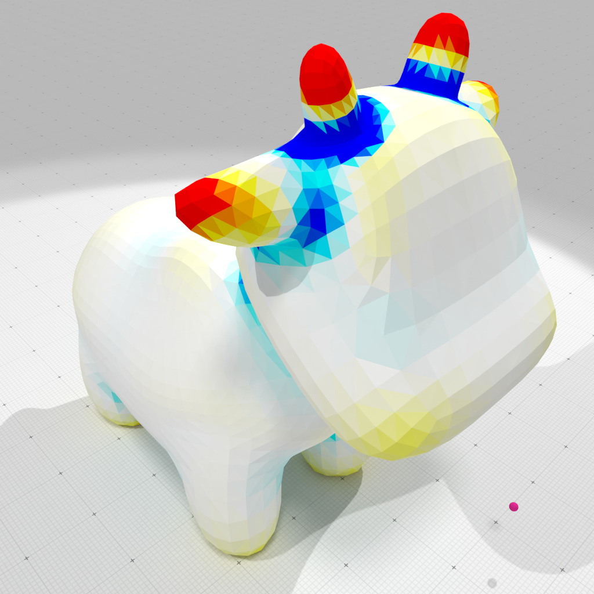

Computation of curvatures on a mesh defined by an OBJ file, using interpolated corrected curvature measures (based on the theory of corrected normal currents).
./examples/geometry/meshes/obj-curvature-measures-icnc-3d ../examples/samples/spot.obj 0.05 10 100
outputs
[SurfaceMeshReader::readOBJ] Read #lines=12011 #V=2930 #VN=0 #F=5856 Mesh=[SurfaceMesh (OK) #V=2930 #VN=0 #E=8784 #F=5856 #FN=0 E[IF]=3 E[IV]=5.9959 E[IFE]=2] diameter=2.58809 radius=0.05 Computed mean curvatures: min=-7.7107 max=19.5898 Computed Gaussian curvatures: min=-190.593 max=377.898
It also produces several OBJ files to display curvature estimation results, example-cnc-H.obj and example-cnc-G.obj as well as the associated MTL file.

Interpolated corrected mean curvature measure, r=0.05 |

Interpolated corrected Gaussian curvature measure, r=0.05 |
#include <iostream>
#include <fstream>
#include <algorithm>
#include "DGtal/base/Common.h"
#include "DGtal/shapes/SurfaceMesh.h"
#include "DGtal/shapes/SurfaceMeshHelper.h"
#include "DGtal/geometry/meshes/CorrectedNormalCurrentComputer.h"
#include "DGtal/io/readers/SurfaceMeshReader.h"
#include "DGtal/io/writers/SurfaceMeshWriter.h"
#include "DGtal/io/colormaps/GradientColorMap.h"
#include "DGtal/io/colormaps/QuantifiedColorMap.h"
{
DGtal::GradientColorMap< double > gradcmap( min_value, max_value );
gradcmap.addColor( DGtal::Color( 0, 255, 255 ) );
gradcmap.addColor( DGtal::Color( 255, 255, 255 ) );
gradcmap.addColor( DGtal::Color( 255, 255, 0 ) );
gradcmap.addColor( DGtal::Color( 255, 0, 0 ) );
return gradcmap;
}
void usage( int argc, char* argv[] )
{
std::cout << "Usage: " << std::endl
<< "\t" << argv[ 0 ] << " <filename.obj> <R> <Hmax> <Gmax>" << std::endl
<< std::endl
<< "Computation of mean and Gaussian curvatures on a mesh, " << std::endl
<< "using interpolated corrected curvature measures (based " << std::endl
<< "on the theory of corrected normal currents)." << std::endl
<< "- builds the surface mesh from file <filename.obj>" << std::endl
<< "- <R> is the radius of the measuring balls" << std::endl
<< "- <Hmax> gives the colormap range [-Hmax,Hmax] for" << std::endl
<< " the output of mean curvature estimates" << std::endl
<< "- <Gmax> gives the colormap range [-Gmax,Gmax] for" << std::endl
<< " the output of mean curvature estimates" << std::endl
<< "It produces several OBJ files to display mean and" << std::endl
<< "Gaussian curvature estimation results: `example-cnc-H.obj`" << std::endl
<< "and `example-cnc-G.obj` as well as the associated MTL file." << std::endl;
}
{
if ( argc <= 1 )
{
usage( argc, argv );
return 0;
}
using namespace DGtal;
using namespace DGtal::Z3i;
// OBJ file
std::string input = argv[ 1 ];
const double R = argc > 2 ? atof( argv[ 2 ] ) : 0.0; // radius of measuring ball
const double Hmax = argc > 3 ? atof( argv[ 3 ] ) : 5.0; // range mean curvature colormap
const double Gmax = argc > 4 ? atof( argv[ 4 ] ) : 0.5*Hmax*Hmax; // range Gaussian curvature colormap
SM smesh;
std::ifstream obj_stream( input.c_str() );
bool ok = SMR::readOBJ( obj_stream, smesh );
if ( !ok )
{
return 1;
}
RealPoint lo = smesh.position( 0 );
RealPoint up = smesh.position( 0 );
for ( const auto& p : smesh.positions() )
const auto diameter = (up - lo).norm();
<< " diameter=" << diameter
<< " radius=" << R << std::endl;
// builds a CorrectedNormalCurrentComputer object onto the SurfaceMesh object
CNC cnc( smesh );
// computes normals if necessary
if ( smesh.vertexNormals().empty() )
{
if ( smesh.faceNormals().empty() )
smesh.computeFaceNormalsFromPositions();
smesh.computeVertexNormalsFromFaceNormals();
}
// computes area, mean and Gaussian curvature measures
auto mu0 = cnc.computeMu0();
auto mu1 = cnc.computeMu1();
auto mu2 = cnc.computeMu2();
// estimates mean (H) and Gaussian (G) curvatures by measure normalization.
std::vector< double > H( smesh.nbFaces() );
std::vector< double > G( smesh.nbFaces() );
for ( auto f = 0; f < smesh.nbFaces(); ++f )
{
const auto b = smesh.faceCentroid( f );
const auto area = mu0.measure( b, R, f );
H[ f ] = cnc.meanCurvature ( area, mu1.measure( b, R, f ) );
G[ f ] = cnc.GaussianCurvature( area, mu2.measure( b, R, f ) );
}
auto G_min_max = std::minmax_element( G.cbegin(), G.cend() );
std::cout << "Computed mean curvatures:"
<< " min=" << *H_min_max.first << " max=" << *H_min_max.second
<< std::endl;
std::cout << "Computed Gaussian curvatures:"
<< " min=" << *G_min_max.first << " max=" << *G_min_max.second
<< std::endl;
auto colorsH = SMW::Colors( smesh.nbFaces() );
auto colorsG = SMW::Colors( smesh.nbFaces() );
for ( auto i = 0; i < smesh.nbFaces(); i++ )
{
colorsH[ i ] = colormapH( H[ i ] );
colorsG[ i ] = colormapG( G[ i ] );
}
SMW::writeOBJ( "example-cnc-H", smesh, colorsH );
SMW::writeOBJ( "example-cnc-G", smesh, colorsG );
return 0;
}
Aim: This class template may be used to (linearly) convert scalar values in a given range into a colo...
Definition: GradientColorMap.h:120
void addColor(const Color &color)
auto inf(const PointVector< dim, OtherComponent, OtherStorage > &aPoint) const -> decltype(DGtal::inf(*this, aPoint))
Implements the infimum (or greatest lower bound).
auto sup(const PointVector< dim, OtherComponent, OtherStorage > &aPoint) const -> decltype(DGtal::sup(*this, aPoint))
Implements the supremum (or least upper bound).
std::ostream & error()
std::ostream & info()
DGtal::GradientColorMap< double > makeColorMap(double min_value, double max_value)
[curvature-comparator-Includes]
Definition: curvature-comparator-ii-cnc-3d.cpp:89
Z3i this namespace gathers the standard of types for 3D imagery.
DGtal is the top-level namespace which contains all DGtal functions and types.
Definition: ClosedIntegerHalfPlane.h:49
QuantifiedColorMap< TColorMap > makeQuantifiedColorMap(TColorMap colormap, int nb=50)
Definition: QuantifiedColorMap.h:113
Aim: Utility class to compute curvature measures induced by (1) a corrected normal current defined by...
Definition: CorrectedNormalCurrentComputer.h:70
Aim: An helper class for reading mesh files (Wavefront OBJ at this point) and creating a SurfaceMesh.
Definition: SurfaceMeshReader.h:64
Aim: An helper class for writing mesh file formats (Waverfront OBJ at this point) and creating a Surf...
Definition: SurfaceMeshWriter.h:65
Aim: Represents an embedded mesh as faces and a list of vertices. Vertices may be shared among faces ...
Definition: SurfaceMesh.h:92